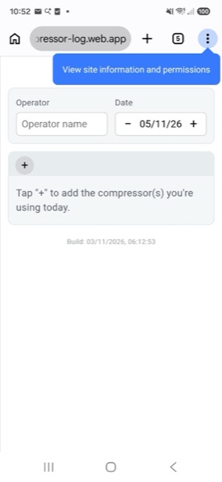
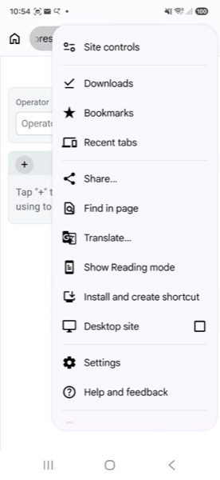
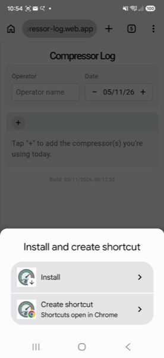
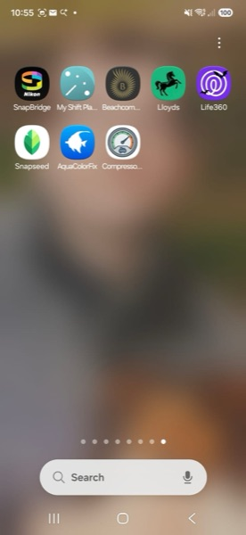
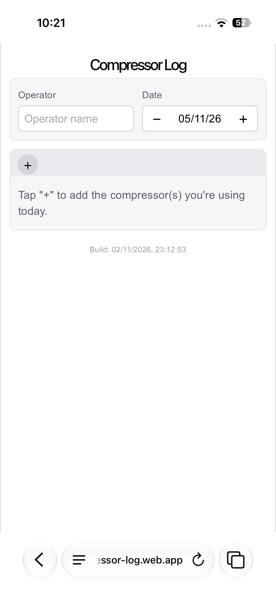
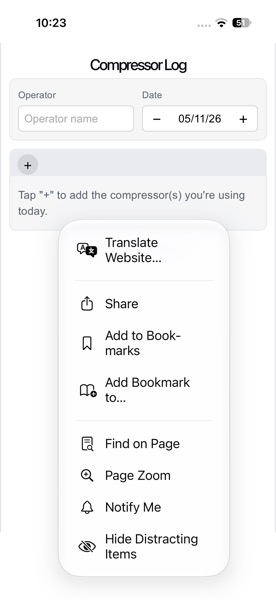
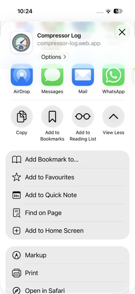
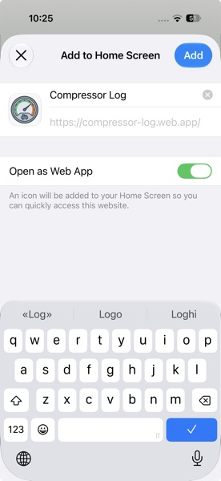
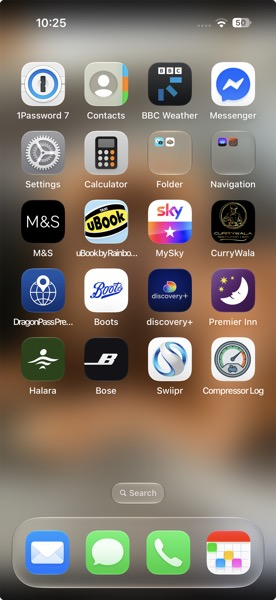

Get the Compressor Log app on your phone's home screen so you can log tank fills and check servicing status in seconds — even with no signal.
Takes about 30 seconds. You only need to do this once.
Tap the address bar at the top of Chrome, type
compressor-log.web.app, then press Go. Once it loads, tap the
⋮ (three dots) in the top-right corner.

It's near the bottom of the menu, just above Desktop site.

Not "Create shortcut" — Install is what gives the app its own icon and lets it work properly offline.

The Compressor Log icon now sits alongside your other apps. Open it from there every time, not from Chrome.

Takes about 30 seconds. Must be done in Safari — Chrome on iPhone can't install it properly.
Tap the address bar at the bottom of the screen, type
compressor-log.web.app, then tap Go.

Tap the small icon at the left of the address bar, then tap Share in the menu that opens. (On some iPhones a Share icon sits directly in the toolbar instead — tap that if you see it.)

In the share sheet, scroll down until you see it, and tap it.

Leave Open as Web App switched on — that's what makes it launch full-screen and work offline, rather than just as a bookmark. Then tap Add top-right.

The Compressor Log icon now sits alongside your other apps. Open it from there every time, not from Safari.

A different Android browser, a Windows phone, a laptop or desktop, or anything else
not covered here — post in #general on Slack and someone will help
you get it installed.